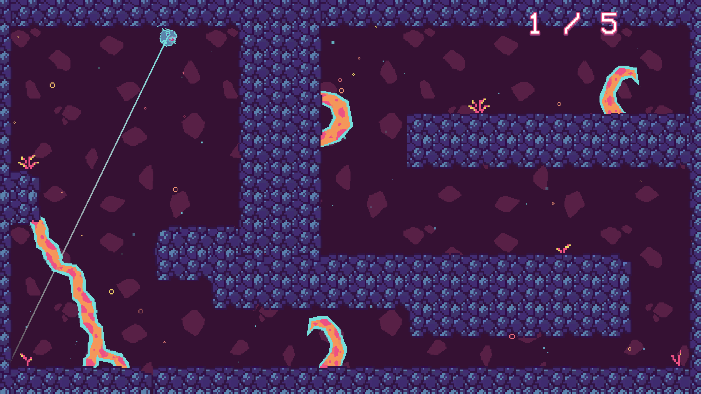

Roots of Evil - Day Zero Finalist + Grand Prix at HeGA 2023
This was a team project created for the annual Global Game Jam, on February 2023. The theme of the jam was "roots".
Based on that, we designed and developed a small platformer game, where the player takes the role of a small alien, which has to defend their home planet from invading roots. The player navigates each of the six levels in order to locate the roots and destroy them, by using the mouse to jump through the platforms in the level.
This game was selected for Finalist + Grand Prix at the "Day Zero" category of the Hellenic Game Awards (HeGA) 2023.
Co - creators:
Simonian (Pixel Art - Animation), Virimine (Technical UI Design & VFX), Step 9 (Music & Sounds)